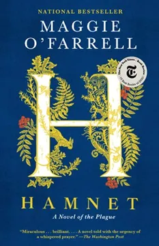

Conoce un poco sobre el tema
Los libros más populares del momento abarcan distintos géneros, desde el misterio hasta la novela histórica, conectando con diversos gustos. Obras como La asistenta o Hamnet destacan por sus historias envolventes y emotivas. En conjunto, estas lecturas entretienen y también invitan a reflexionar sobre la vida y las relaciones humanas.

Géneros mas leidos actualmente
- Romance
- Misterio / novela negra / thriller
- Fantasía y ciencia ficción
- Ficción contemporánea
- Autoayuda y desarrollo personal
- No ficción
Libros mas leídos y sus géneros
- Romance
- Duele querer - Daniel Cowers
- Misterio / thriller
- El libro negro de las horas - Eva García Sáenz de Urturi
- Fantasía
- Alas de ónix - Rebecca Yarros
- Ciencia ficción / distopía
- Sunrise on the Reaping - Suzanne Collins
- Ficción contemporánea
- Comerás flores - Lucía Sollas
- Autoayuda
- Hábitos atómicos - James Clear
- No ficción
- Everything Is Tuberculosis - John Green
Fechas de publicación
| Fecha | Nombre del libro | Género |
|---|---|---|
| 2022 | El libro negro de las horas | Misterio / thriller |
| La asistenta | thriller psicológico | |
| 21 de enero de 2025 | Alas de ónix | Fantasía |
| 18 de marzo de 2025 | Sunrise on the Reaping | Ciencia ficción |